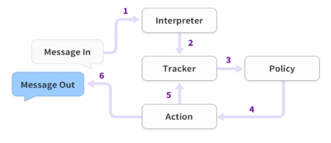
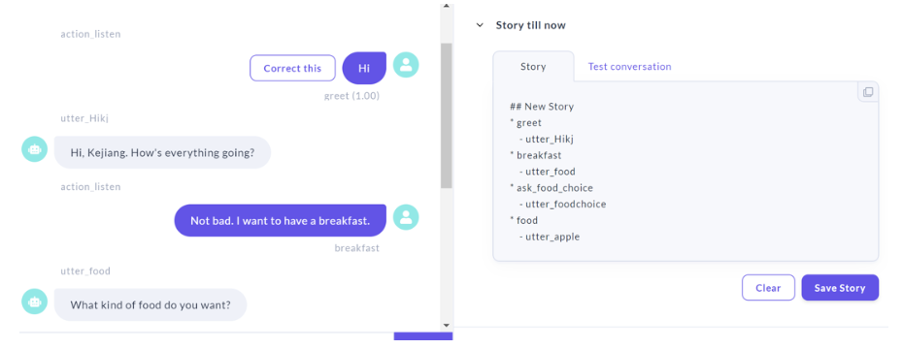

1. Setting the Stage: London in Need
The bustling city of London, known for its resilience and vibrancy, faced an unprecedented challenge with the onset of the COVID-19 pandemic. Hospitals were overwhelmed, routine check-ups were deferred, and there was a general air of unease, especially amongst expectant mothers and those with newborns. In such times, the need for reliable and accessible health information became paramount.
Enter Kejiang Qian, a diligent MSc student armed with skills in Computer Programming and Data Mining. When he began his 10-week placement at Optimum Health Ltd (Kami), he was not just stepping into a professional role but answering a broader societal call. He envisioned creating a digital solution that would be a reliable companion to women during one of the most delicate phases of their lives.
2. The Birth of a Digital Confidant: Crafting the Chatbot
The core of Kejiang's project was a chatbot, but he was determined to ensure it stood out from the myriad of chatbots flooding the digital space. He visualised it as more than just a Q&A tool; it was to be a digital confidant—smart, empathetic, and resourceful.
Utilising the Rasa platform, he embarked on the journey to bring this chatbot to life. But the process was intricate. Data forms the backbone of any AI system, and Kejiang delved deep into databases, ensuring the chatbot was fed accurate, updated, and relevant information. The Latent Dirichlet Allocation (LDA) technique proved crucial, refining the chatbot's response mechanism.
But technical accuracy was just one side of the coin. Kejiang wanted to ensure accessibility. He devoted time to designing an intuitive interface, simplifying complex medical terminologies and ensuring that even those not tech-savvy could navigate with ease.
3. Overcoming Challenges: A Testament to Resilience
No journey is devoid of challenges, and Kejiang's was no exception. Data discrepancies, model tuning, and ensuring the chatbot's empathetic response mechanism were just a few of the hurdles he faced. But with every obstacle, Kejiang's resolve only strengthened.
Collaborating closely with the Kami team, he incorporated feedback, iterated designs, and continually refined the chatbot. These challenges, while daunting, provided Kejiang with invaluable insights. They honed his technical prowess, yes, but more importantly, they instilled a deeper understanding of the real-world impact of technology. He realised that at the intersection of code and data lay real human emotions and needs.
4. Reflection and The Road Ahead
As the 10-week placement neared its end, the digital landscape of maternal and newborn care in London had a new ally. Kejiang's chatbot was not just a testament to his technical skills but a beacon of hope and support for countless women.
In retrospect, the placement was transformative for Kejiang. Beyond the tangible chatbot, he emerged with a richer perspective on the symbiotic relationship between technology and societal well-being. The challenges faced, the late nights, the iterations—all culminated in a product that promised to make a difference in countless lives.
And as Kejiang stands on the cusp of a promising career, he carries forward not just a formidable skill set but the ethos of using technology as a tool for societal betterment. The future beckons, and Kejiang Qian is poised to continue his journey of innovation, always with an eye on the broader impact.
(Editor: Mr. Xianghui Zhang, Dr. Yijing Li)


More of story continues here...